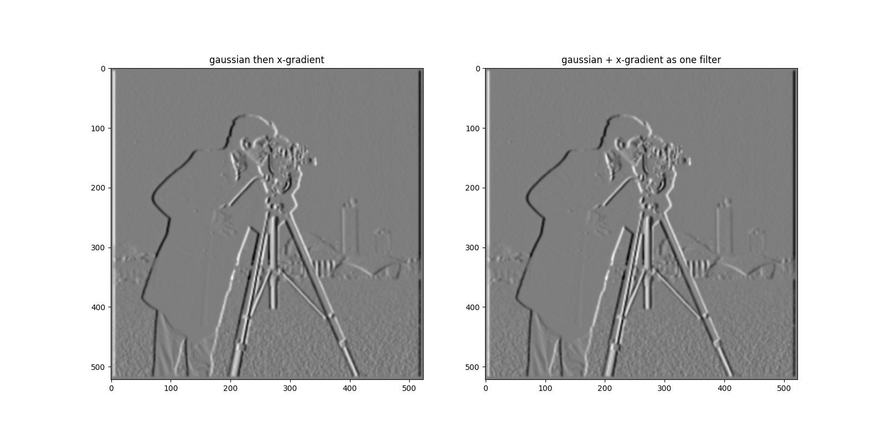
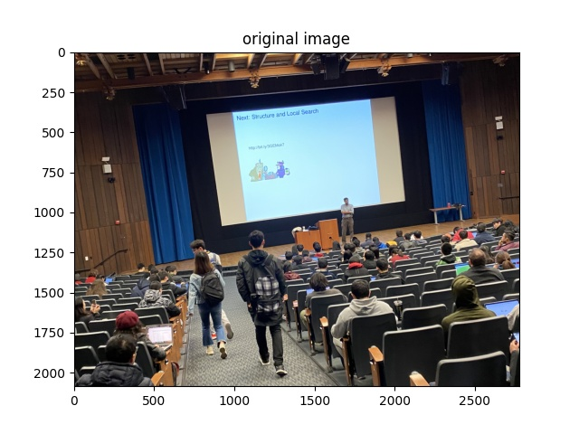
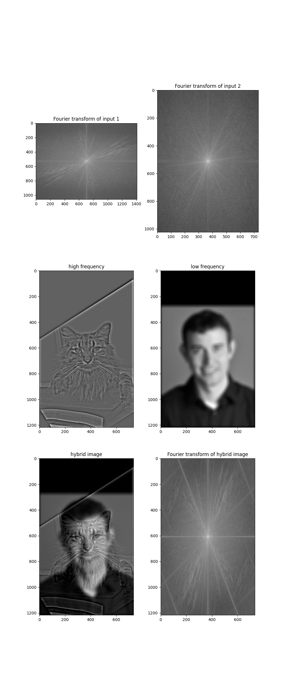

CS194-26 Project#2 Report
Name: Tony Tu
SID: 3033048631
Part 1
Part 1.1
The gradient magnitude image is calculated with the following steps:
- Convolve the image with finite difference operators (D_x and D_y) to obtain the gradient of each pixel along x and y axis.
- Calculate the norm of the gradient at each pixel. Suppose the gradient along the x and y axis are G_x and G_y respectively. Then the norm of the gradient is (G_x^2 + G_y^2)^(0.5)
The resulting image is:
Part 1.2
The results are as follows.
- Gradient along x axis: 
- Gradient along y axis:
- Gradient magnitude:
The resulting image has clearer edges and less noise. It identifies the edges better without introducing as much noise as before.
Part 1.3
- Example image:
- Case 1:
- Case 2:
- Case 3 (failure):

Part 2
Part 2.1
Sharpening of the example image:
- Original image:
- Sharpened image:

Blurring and resharpening another image:
- Original image: 
- Blurred image:
- Sharpened image:

Part 2.2
- Example image
- Water and Paint (no color)
- Failed attemp
Steps:
Result:

Steps:
Result:
Steps:
Result:
Extra credit:
Color on high frequency provides more details and works better.- Water and Paint (with color)
- Example (with color)
Steps:
Result:
Steps:
Result:
Part 2.3
Example 1:
Example 2:
Part 2.4
- Apple + Orange
- Moon + Jupiter
- Man + Taj Mahal (irregular mask)
Effect:
Process:
Effect:
Process:
Effect:
Mask:
Process: